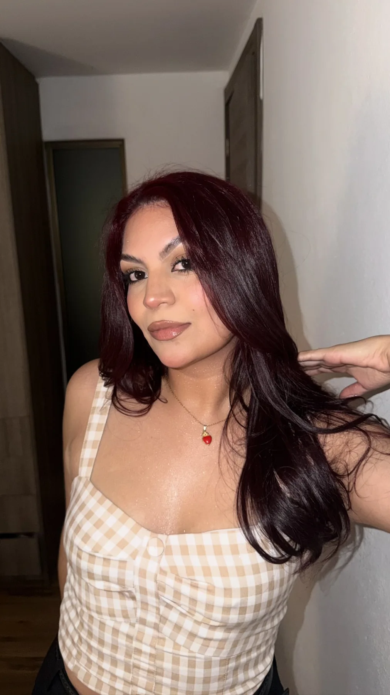
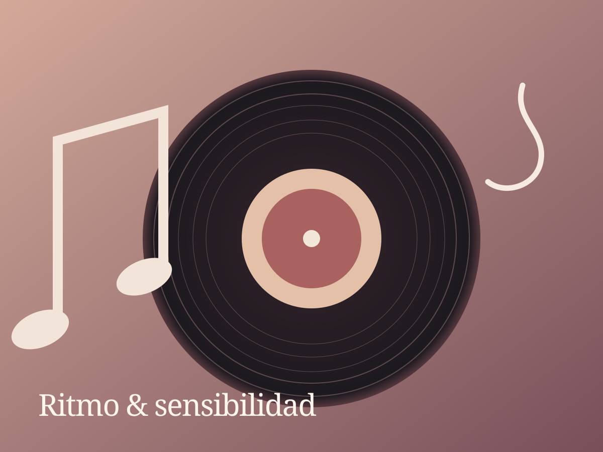
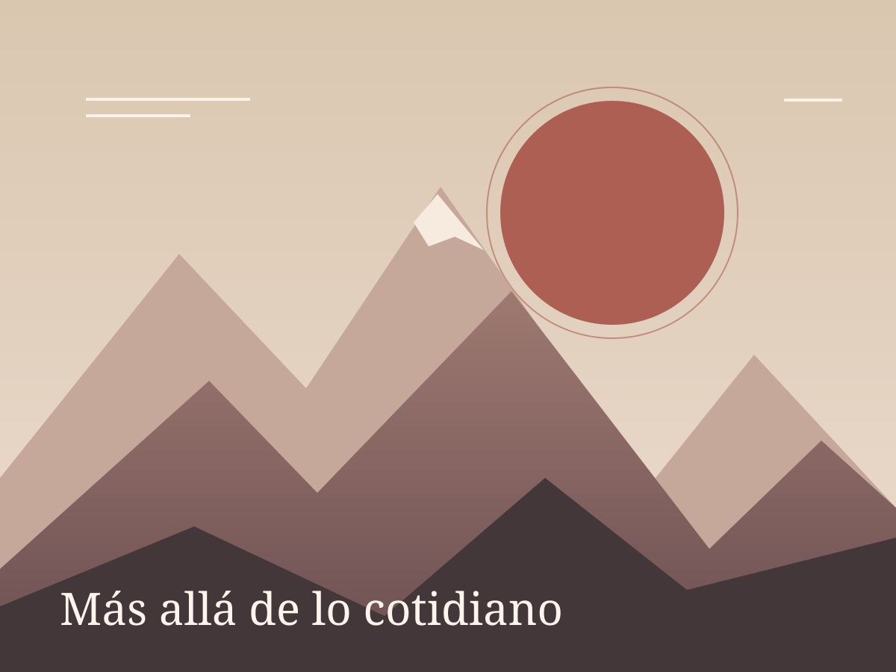

01 / MIRAR
Fotografía
Me encanta descubrir historias en los detalles. La luz, los colores y las composiciones me ayudan a mirar lo cotidiano desde nuevas perspectivas.
OBSERVAR • EXPERIMENTAR • CREARPaula Anabel Ávila Abril
Ideas que toman forma.
Diseño que deja huella.
Exploro la identidad visual, la fotografía y la comunicación gráfica para transformar conceptos en experiencias que conectan.

Soy Paula, estudiante de diseño gráfico con interés por crear propuestas visuales auténticas, sensibles y funcionales.
Me gusta experimentar con formas, tipografía, color e imagen. Encuentro inspiración en los detalles cotidianos y disfruto convertir una idea en una identidad con personalidad.
¿Tienes una idea, una colaboración o simplemente quieres conversar de diseño? Estoy a un mensaje de distancia.
Completa el formulario y se abrirá tu aplicación de correo con el mensaje preparado.
Una selección de proyectos que exploran marcas, fotografía y diseño de información.
¿Te interesa ver más de mi proceso creativo?
ConversemosMis intereses son pequeños universos que nutren mi curiosidad y mi forma de observar el mundo.
Me encanta descubrir historias en los detalles. La luz, los colores y las composiciones me ayudan a mirar lo cotidiano desde nuevas perspectivas.
OBSERVAR • EXPERIMENTAR • CREAR
La música acompaña mis procesos creativos. Cada ritmo despierta una emoción distinta y me ayuda a encontrar nuevas ideas.
RITMO • ENERGÍA • EMOCIÓN
Conocer lugares, costumbres y paisajes amplía mi mirada. Disfruto observar cómo cada entorno tiene su propia identidad visual.
EXPLORAR • APRENDER • INSPIRAR“La creatividad comienza cuando aprendemos a mirar lo común de una forma extraordinaria.”
Ver cómo creo